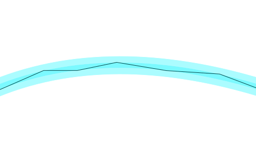

C

F
전송 속도 (Transmission Speed): "한계가 없는 속도"

성능 수준
-
기본 10Gbps, 100Gbps를 넘어 상용화된 장비에서 400Gbps까지
구현되며, 광케이블은 전자가 아닌 광자(빛)를 이용하기 때문에 데이터
전송 속도가 비약적으로 빠릅니다.
확장성: WDM(파장 분할 다중화)
-
빛의 색깔(파장)을 수백 개로 쪼개어 한 가닥의 선으로 수
Tbps(테라비트)의 데이터를 보낼 수 있습니다. 이는 구리 케이블 수만
가닥을 합친 것보다 큰 용량입니다.
전송 거리 (Transmission Distance): "지구 반대편까지"

멀티모드
-
빌딩이나 데이터센터 내에서 300m ~ 550m를 손실 없이 전송합니다.
싱글모드
-
신호 증폭기 없이 수십 km에서 최대 100km까지 신호를 보냅니다. (구리
케이블의 1,000배 거리)
해저 광케이블
-
전 세계 대륙을 잇는 수만 km의 해저 통신망도 이 성능 덕분에
가능합니다.
감쇠율 (Attenuation): "사라지지 않는 에너지"
낮은 손실
-
싱글모드 기준 1km당 신호 손실이 0.2dB 미만입니다. 이는 구리
케이블이 100m만 가도 신호가 거의 사라지는 것과 비교하면
혁명적이며, 이로 인해 에너지가 이동하면서 손실되는 비율이 극도로
낮습니다. 이는 내부 전반사 원리를 통해 빛 에너지를 밖으로 흘리지
않고 가두었기 때문입니다.
지연 시간 (Latency): "빛의 속도로 즉각 반응"
실시간성
-
빛은 매질 속에서 초당 약 20만 km로 이동합니다. 신호를 복원하기
위한 장비(리피터)를 중간에 많이 설치할 필요가 없어, 자율주행, 원격
수술, 실시간 금융 거래에서 필수적인 저지연 성능을 제공합니다.